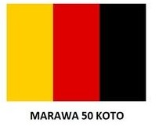

Tanah datar
Tanah Datar atau Luhak Nan Tuo merupakan salah satu kabupaten di provinsi Sumatra Barat, Indonesia, yang beribu kota Batusangkar. Kabupaten ini memiliki luas wilayah 133.600 Ha (1.336 km2) dengan jumlah penduduk 374.431 jiwa pada tahun 2021. Tanah Datar memiliki 14 kecamatan,
75 nagari, dan 395 jorong. Kabupaten ini merupakan daerah agraris,
lebih 70% penduduknya bekerja pada sektor pertanian, baik pertanian tanaman pangan,
perkebunan, perikanan, maupun peternakan.
Warna kuning berasal dari Kabupaten Tanah Datar dengan cangkupan Nagari Solo, Batu Sangkar, Muaro Sijunjuang, Damas raya.
Luhak ini menandakan Nan Tuo sebagai pemimpin suku atau penghulu adat dimana dalam bahasa minang,
penghulu adat derajatnya setara dengan Raja. Susunan dari Tanah Datar ialah, Hitam-Merah-Kuning.
Agam
Kawasan kabupaten ini bermula dari kumpulan beberapa nagari yang pernah ada dalam kawasan Luhak Agam,
pada masa pemerintahan Hindia Belanda,
kawasan ini dijadikan Onderafdeeling Oud Agam dengan kota Bukittinggi sebagai ibu kotanya pada masa itu.Kemudian berdasarkan Peraturan Pemerintah Nomor 8 Tahun 1998,
ditetapkan pada 7 Januari 1998, ibu kota kabupaten Agam secara resmi dipindahkan ke Lubuk Basung.
Warna Merah merupakan simbol dari Kabupaten Agam, adapun Wilayah-wilayah nya adalah Nagari Padang, Pariaman, Bukit Tinggi. Warna ini mencerminkan keberanian dan juga mempunyai arti sebuah keagungan sehingga disebut dengan Alim Ulama atau ahli dalam menjalankan keagamaan untuk menyiarkan syariat Islam pada Nagarinya.
Masyarakatnya pun mempunyai hukum yang tertera di wilayahnya sesuai dengan ajaran agama.
Begitu pula dengan warna ini, jika sedang berada di wilayahnya,
maka susunannya ialah Hitam-Kuning-Merah.
50 Kota

Sejarah 50 kota ialah Datuak Sri Maharajo Nan Banego memimpin 50 orang menuju ke arah Utara,
daerah Payakumbuh. Tempat ini kemudian dikenal dengan nama Luhak Lima Puluah yang dalam perkembanganya menjadi Kabupaten 50 Kota.
Untuk mengenang searah asal-usul nama kabupaten ini,
pada lambang daerahnya kemudian dicatumkan angka 50.
Nama kabupaten ini berasal dari peristiwa datangnya 50 rombongan dari Pariangan Padang Panjang, untuk mencari wilayah pemukiman di kaki Gunung Sago. Rombongan ini berangkat dari Pariangan Padang Panjang menuju ke beberapa daerah yang berbeda di wilayah kabupaten ini.
Sebelum menuju tempat pemukiman yang mereka inginkan,
para rombongan tersebut beristirahat di sebuah padang luas.
Ketika pagi tiba, mereka kehilangan lima rombongan. Setelah bertanya-tanya,
para rombongan mengatakan ‘antahlah’ sehingga, padang luas ini kini bernama Padang Siantah.
Keunikan Minangkabau
Suku Minangkabau yang terkenal sebagai perantau ini
tak hanya tinggal di Sumatera saja namun tersebar di berbagai penjuru nusantara.
Memiliki Kebiasaan Merantau Suku Minang berusaha keluar dari kampung halaman atau pergi meninggalkan kampung halaman untuk menyambung hidup di daerah atau negeri orang.
Peristiwa ini disebut "merantau".
Daerah yang dituju adalah perkotaan yang ramai.
Rata-rata, usaha yang dilakoni orang Minangkabau adalah berdagang.
Saat merantau, mereka tidak membawa modal berupa uang, melainkan semangat dan keuletan.
Bagi orang Minang, merantau untuk melawan kemiskinan.
Orang Minang menyadarai bahwa pengangguran adalah hal yang memalukan